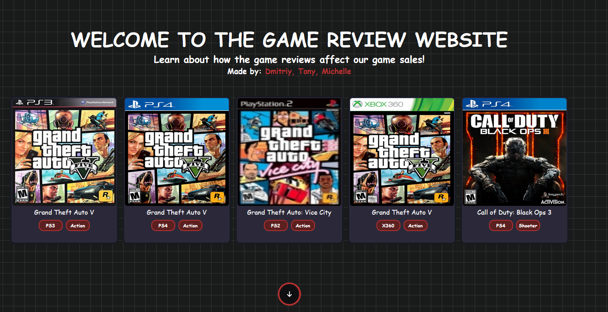
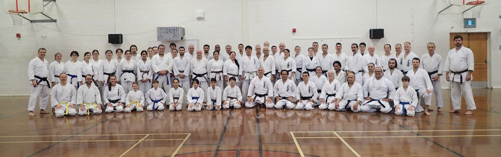

Junior Software Developer
About me
I'm a curious student living in Quebec and currently studying Computer Science. I have a strong interest in software development and I am committed to providing useful yet visually pleasing for users. I look forward to exploring various sectors in the tech industry where I can improve and feel the satisfaction of my work.


Computer Science Program

Education - Skills taught
Dawson College (2022 - Present)
- Front End & Design
- - HTML
- - JS
- - CSS
- - React
- - Photoshop
- - Figma
- Back End
- - C#
- - Java
- - Python
- - SQL
- - Express
- Tools
- - Git
- - AWS
- - Docker
Personal Projects
-
Game Review
Website that displays the reviews and the sales of a given game in 2018
 -
Breakfast Buffers
Game that teaches basic buffer concepts to university students

-
Schedule generator
Creates a calendar from supplied course outlines

Interests
-
Puzzle Games
Other than coding, I really like puzzles games!
such as Fran Bow or Little Misfortune!
I also really like escape rooms
-
Karate
I regularly practice shotokan karate and this sport has been present for a long time in my life
 -
Drawing
I really enjoy drawing little doodles on procreate and designing web applications for fun!